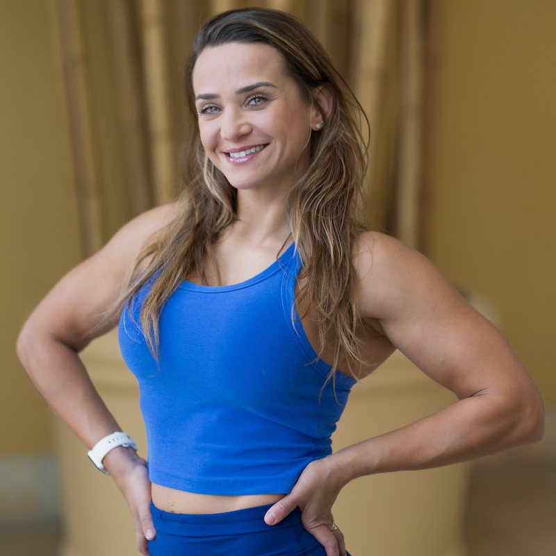

Hi, I'm Suellen — originally from Brazil and currently based in San Diego. I hold a degree in Psychology and have always been passionate about helping people grow, both mentally and physically. I started CrossFit in 2019 and began coaching in 2024. What started as a personal fitness journey quickly became a passion for helping others discover their own strength and confidence. My goal is to create a positive, supportive environment where athletes of all levels can build healthy habits and enjoy the process. I believe fitness should enhance your quality of life, not just your performance in the gym.
Gigi came to CrossFit after years of running, yoga, and light strength training, drawn in by a friend's invitation and immediately hooked. She gravitated toward the weightlifting side of CrossFit and has been training for 9 years, coaching for 4. Her philosophy is rooted in quality over quantity — technique is non-negotiable before load, and she makes it her priority to ensure every athlete moves safely first.
Megan found CrossFit in 2014 after a competitive career in soccer and track. She started as a complete beginner with no gymnastic skills and limited mobility, and through a decade of consistent work competed on a North America West Semifinals team in 2023. She knows exactly what it takes to go from zero to competitive, and brings that experience to every class.
Illa holds a master's degree in Exercise Science and a bachelor's in Kinesiology, with coaching experience at Division I programs at the University of Tennessee and San Jose State. A collegiate softball scholarship athlete, she brings deep knowledge of human movement, strength and conditioning, and athlete development to the coaching floor.